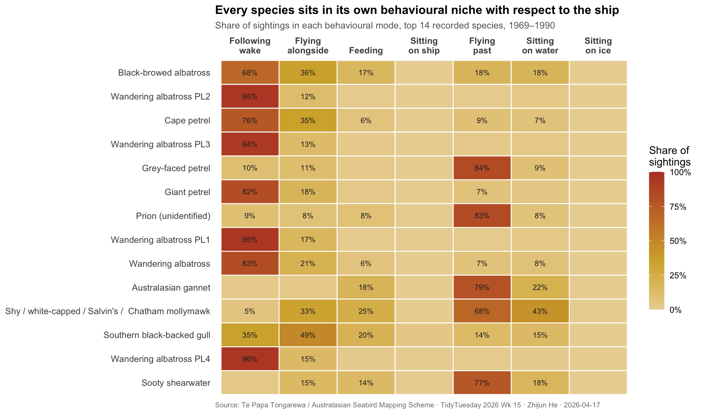
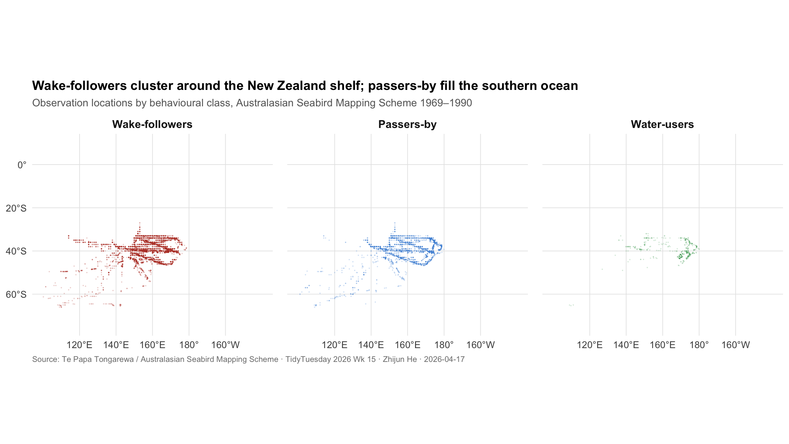

Who Follows the Ship
TidyTuesday 2026 · Week 15 · Seabird Sightings Near New Zealand, 1969–1990
Background
For most of the twentieth century, the southern oceans below Australia and New Zealand were travelled by a small number of ships — research vessels, fishing trawlers, cargo ships, whaling ships — and watched by an even smaller number of seabird observers. From 1969 to 1990, under the Australasian Seabird Mapping Scheme, those observers kept standardised ten-minute logs of every seabird they could see from the deck. For each sighting they recorded species, count, and a small set of behavioural codes: was the bird flying past, sitting on water, sitting on ice, feeding, following the ship’s wake, or flying alongside? The resulting dataset, now curated by Te Papa Tongarewa (the Museum of New Zealand), contains tens of thousands of observations.
The behavioural columns matter. One of the central facts of modern seabird ecology is that many pelagic species have a strong, species-specific relationship to fishing vessels. Albatrosses and giant petrels routinely trail trawlers for hours to feed on fish discards; this is their ecological opportunity and, via longline bycatch, their ecological peril. Other species — prions, storm petrels, shearwaters — show little interest in ships and fly past them as if they were not there. The division is not a modern conservation artefact. It is a stable behavioural feature of the birds themselves, and the Australasian log book, collected before the industrial fishing footprint of the Southern Ocean reached its modern scale, offers an unusually clean window into what the natural partition looked like.
Motivation & Research Question
The suggested question for this week’s dataset concerns record-keeping: do the split columns agree with the original logbook entries in species_common_name? That is a useful data-quality audit, and the answer is mostly yes. A more interesting question the data supports is ecological. Every sighting comes tagged with behaviour — and every bird species has a different pattern of behaviours. If the boundary between ship-followers and passers-by is as clean as seabird ecologists describe, it should be visible immediately in the joint distribution of species and behaviour, without any model at all.
Research question: Do seabird species in the Australasian log book divide cleanly into ship-followers and ship-ignorers, and does the division track known taxonomy and foraging strategy?
Data Preparation
Show code
# Join birds with ship records to carry along date and location.
bird_ship <- birds |>
filter(!is.na(species_common_name)) |>
left_join(ships |> select(record_id, date, latitude, longitude, activity),
by = "record_id")
# The logbook frequently records identification at genus level
# (e.g. "Royal albatross sensu lato") or with plumage/age tags (AD, JUV).
# Collapse to a simpler species label by stripping trailing age/sex tokens
# and pooling obvious aggregates.
bird_ship <- bird_ship |>
mutate(
species_label = species_common_name |>
str_remove_all(" sensu lato") |>
str_remove_all("\\s+(AD|JUV|IMM|SUBAD|M|F)$") |>
str_trim(),
species_label = fct_lump_min(species_label, min = 300)
)
# Pick the most commonly recorded species (top 14) for the heatmap
top_species <- bird_ship |>
filter(species_label != "Other") |>
count(species_label, sort = TRUE) |>
slice_head(n = 14) |>
pull(species_label)
beh_df <- bird_ship |>
filter(species_label %in% top_species) |>
mutate(species_label = factor(species_label, levels = rev(top_species)))
cat("Total bird observations:", format(nrow(birds), big.mark = ","), "\n")Total bird observations: 49,019 Linked to ship records: 48,327 Show code
Date range: 1969-07-31 – 1990-12-21 Show code
Top 14 species cover 63% of observationsVisualization 1: Behaviour × Species
Show code
behaviours <- c(
following_ship = "Following\nwake",
accompanying = "Flying\nalongside",
feeding = "Feeding",
sitting_on_ship = "Sitting\non ship",
flying_past = "Flying\npast",
sitting_on_water = "Sitting\non water",
sitting_on_ice = "Sitting\non ice"
)
# Per-species share of sightings exhibiting each behaviour
beh_long <- beh_df |>
select(species_label, all_of(names(behaviours))) |>
pivot_longer(-species_label, names_to = "behaviour", values_to = "flag") |>
filter(!is.na(flag)) |>
group_by(species_label, behaviour) |>
summarise(share = mean(flag), n = n(), .groups = "drop") |>
mutate(
behaviour = factor(behaviour,
levels = names(behaviours),
labels = behaviours)
)
ggplot(beh_long,
aes(x = behaviour, y = species_label, fill = share)) +
geom_tile(colour = "white", linewidth = 0.5) +
geom_text(aes(label = ifelse(share >= 0.05,
sprintf("%.0f%%", 100 * share), "")),
size = 3, colour = "grey15") +
scale_fill_gradient2(
low = "#f3f5f8", mid = "#d4af37", high = "#b8412d",
midpoint = 0.35,
name = "Share of\nsightings",
limits = c(0, 1),
labels = percent_format(accuracy = 1)
) +
scale_x_discrete(position = "top") +
labs(
title = "Every species sits in its own behavioural niche with respect to the ship",
subtitle = "Share of sightings in each behavioural mode, top 14 recorded species, 1969–1990",
x = NULL, y = NULL,
caption = "Source: Te Papa Tongarewa / Australasian Seabird Mapping Scheme · TidyTuesday 2026 Wk 15 · Zhijun He · 2026-04-17"
) +
theme_minimal(base_size = 12) +
theme(
plot.title = element_text(face = "bold", size = 13.5),
plot.subtitle = element_text(color = "grey40", size = 10.5),
plot.caption = element_text(color = "grey50", size = 8, hjust = 0),
panel.grid = element_blank(),
axis.text.x = element_text(size = 10, face = "bold", lineheight = 0.9),
axis.text.y = element_text(size = 10),
legend.position = "right",
legend.key.height = unit(1.1, "cm")
)
The heatmap reads as a behavioural niche map. Each row is a species; each column is a behaviour; the cell intensity is the share of that species’ sightings in which the behaviour was recorded. Numbers appear in cells where the behaviour accounts for at least 5 percent of sightings, to keep the plot legible. A distinct block structure is immediately visible. The “Following wake” and “Flying alongside” columns light up strongly for the albatrosses, giant petrels, and cape petrels at the top — the species that seabird ecologists describe as ship-followers. The “Flying past” column dominates for the small tube-nosed species: prions, storm petrels, shearwaters. “Sitting on water” shows up in species that use the ocean surface as a platform for prolonged rest or local foraging (shearwaters, cape petrels) rather than actively trailing the ship. Two species — the black-browed albatross and the cape petrel — sit at the intersection of two columns (“flying past” and “following ship”), consistent with their status as flexible generalists that can either follow vessels or not depending on circumstance. The behavioural division is not a dichotomy of two clean groups. It is a structured gradient that the taxonomy anticipates.
Visualization 2: Where the Behaviours Happen
Show code
# Collapse each observation to one behaviour class: wake-follower,
# water-user, or flying past, using the dominant recorded behaviour.
obs_class <- bird_ship |>
filter(species_label %in% top_species,
!is.na(latitude), !is.na(longitude),
between(latitude, -75, 10),
between(longitude, 100, 220)) |>
mutate(
behaviour_class = case_when(
following_ship | accompanying ~ "Wake-followers",
sitting_on_water & !flying_past ~ "Water-users",
flying_past ~ "Passers-by",
TRUE ~ "Other"
),
behaviour_class = factor(behaviour_class,
levels = c("Wake-followers",
"Passers-by",
"Water-users",
"Other"))
) |>
filter(behaviour_class != "Other") |>
# Bin longitudes past the antimeridian (east of 180) into positive space
mutate(lon_wrapped = ifelse(longitude < 0, longitude + 360, longitude))
class_pal <- c(
"Wake-followers" = "#b8412d",
"Passers-by" = "#4a90d9",
"Water-users" = "#5aab6d"
)
ggplot(obs_class,
aes(x = lon_wrapped, y = latitude, colour = behaviour_class)) +
# very light lat/lon grid
geom_hline(yintercept = c(-60, -40, -20, 0),
colour = "grey90", linewidth = 0.3) +
geom_vline(xintercept = c(120, 140, 160, 180, 200),
colour = "grey90", linewidth = 0.3) +
geom_point(size = 0.6, alpha = 0.25, stroke = 0) +
facet_wrap(~ behaviour_class, nrow = 1) +
scale_colour_manual(values = class_pal, guide = "none") +
scale_x_continuous(breaks = c(120, 140, 160, 180, 200),
labels = c("120°E", "140°E", "160°E", "180°", "160°W")) +
scale_y_continuous(breaks = seq(-60, 0, 20),
labels = c("60°S", "40°S", "20°S", "0°")) +
coord_quickmap(xlim = c(100, 220), ylim = c(-75, 10)) +
labs(
title = "Wake-followers cluster around the New Zealand shelf; passers-by fill the southern ocean",
subtitle = "Observation locations by behavioural class, Australasian Seabird Mapping Scheme 1969–1990",
x = NULL, y = NULL,
caption = "Source: Te Papa Tongarewa / Australasian Seabird Mapping Scheme · TidyTuesday 2026 Wk 15 · Zhijun He · 2026-04-17"
) +
theme_minimal(base_size = 12) +
theme(
plot.title = element_text(face = "bold", size = 13),
plot.subtitle = element_text(color = "grey40", size = 10.5),
plot.caption = element_text(color = "grey50", size = 8, hjust = 0),
strip.text = element_text(face = "bold", size = 11),
panel.grid = element_blank(),
panel.spacing = unit(1, "lines")
)
The three-panel map takes each observation’s dominant behaviour and plots where in the ocean it was recorded, from the Australian coast in the west to roughly 160°W in the east. The panels differ. Wake-following sightings, in red, cluster strikingly around the waters immediately east and south of New Zealand, with a second concentration along the eastern Australian shelf — the areas where the commercial trawl and longline fishery was most active in this period, and where the hungry, ship-following albatrosses and giant petrels would most reliably find food scraps. The passer-by cloud, in blue, is diffuse across nearly the entire range — a reflection of how the smaller tube-noses move through the southern ocean on their own migratory and foraging business regardless of the ships present. Water-users, in green, share the coastal footprint of the wake-followers but extend into the open ocean wherever sightings were recorded. The shape of each panel is a product of where ships actually went, not of independent random sampling of the ocean — but within that sampling footprint, the behavioural signature of each class is visible in a very different spatial signature.
Takeaway
The Australasian seabird log book, assembled over two decades by observers on ships passing through one of the wildest seabird theatres on earth, is rich enough that the behavioural structure of the community emerges without any modelling at all. Species do not interact with ships uniformly. They split into groups the taxonomy predicts: the big pelagic scavengers — wandering and royal albatross, giant petrels, cape petrels — trail vessels and cluster in the same ocean patches as the commercial fisheries that those vessels fed into. The smaller tube-noses — fairy prions, sooty shearwaters, Wilson’s storm petrel — mostly ignore ships and distribute widely across the southern ocean.
The dataset predates the period in which longline bycatch was recognised as a principal cause of albatross decline, and it predates the spatial management tools now used to mitigate that decline. What it shows, in retrospect, is the behavioural substrate the problem was built on. The exact same species that follow ships in the 1975 log are the species now documented as most vulnerable to hook-and-line mortality. The log book did not know that yet. It simply recorded what the birds did. The continuity between the behaviour and the modern conservation record is a good reminder that historical natural-history data, collected without a specific management question in mind, can turn out to answer one.